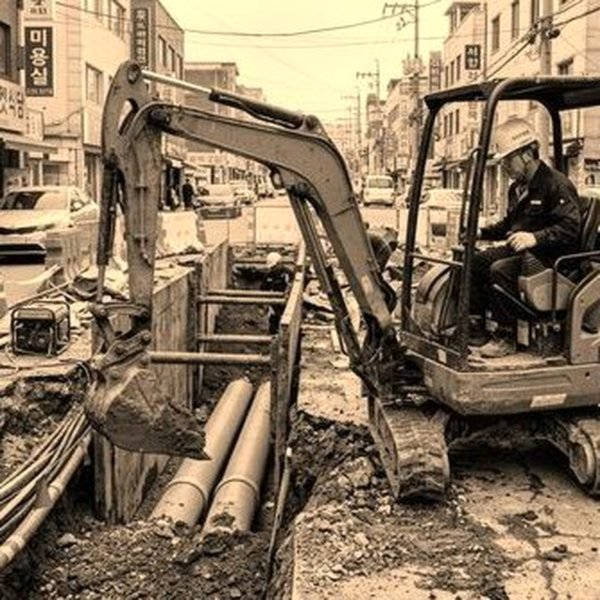
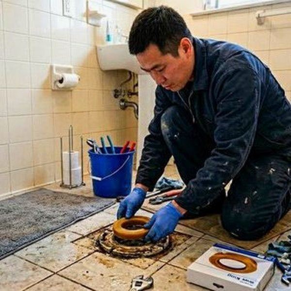
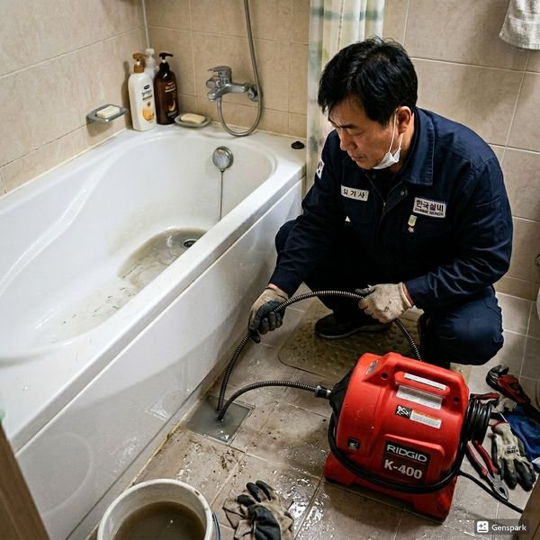

제우스시설관리 | 2025년 4월

주방 싱크대 아래 'U자' 또는 'P자' 형태의 배수트랩은 악취와 해충을 막는 중요한 부분입니다. 하지만 이곳이 가장 먼저 막히는 부분이기도 합니다.
배수트랩은 배수관의 일부가 U자 또는 P자 형태로 굽어진 구조입니다. 이 부분에 항상 물이 고여있어 냄새나 벌레가 역류하는 것을 막습니다.
주요 부분:
• 트랩 보울 - 물이 고이는 부분
• 오버플로우 홀 - 물이 넘칠 때 배출구
• 연결 나사 - 설치와 청소를 위한 분리 지점
1. 음식물 찌꺼기 축적 - 가장 흔한 원인. 밥, 면, 고기 등이 U자 부분에 쌓임
2. 기름 응고 - 뜨거운 기름이 식으면서 고형화
3. 세제 잔여물 - 오래되면 굳어져 막힘 유발
4. 헤어밴드, 비닐 등 이물질 - 의도하지 않게 빨려 들어온 물질
준비물: 버킷, 타월, 스패너, 브러시, 세정제, 핀셋
단계별 청소:
1단계: 물 준비
트랩 아래 버킷을 놓고, 천천히 수도꼭지를 열어 트랩에 고인 물을 내보냅니다.
2단계: 트랩 분리
스패너로 트랩 보울 아래 연결 나사를 반시계방향으로 풀어 제거합니다. 약간의 물이 흘릴 수 있으니 타올을 깔아두세요.
3단계: 큰 이물질 제거
핀셋이나 손으로 트랩 보울과 연결부에 붙은 음식물, 머리카락 등을 꺼냅니다.
4단계: 브러시로 문질러 청소
배수트랩 내부를 브러시로 문질러 기름층과 축적된 오염물을 제거합니다. 이때 세정제(식초와 베이킹소다 혼합물 또는 중성 세제)를 사용하면 효과적입니다.
5단계: 헹굼과 복구
물로 깨끗이 헹군 후 제거했던 부분을 다시 조립하고 나사를 단단히 조여줍니다.
6단계: 수도 시운전
천천히 물을 흘려보내며 누수가 없는지 확인합니다.
DIY로 청소했는데도 계속 물이 천천히 내려가거나, 냄새가 사라지지 않으면 트랩 더 깊은 곳이나 배관 다른 부분이 막혔을 가능성이 높습니다. 이 경우 드레인 기계와 내시경으로 전문 청소가 필요합니다.

